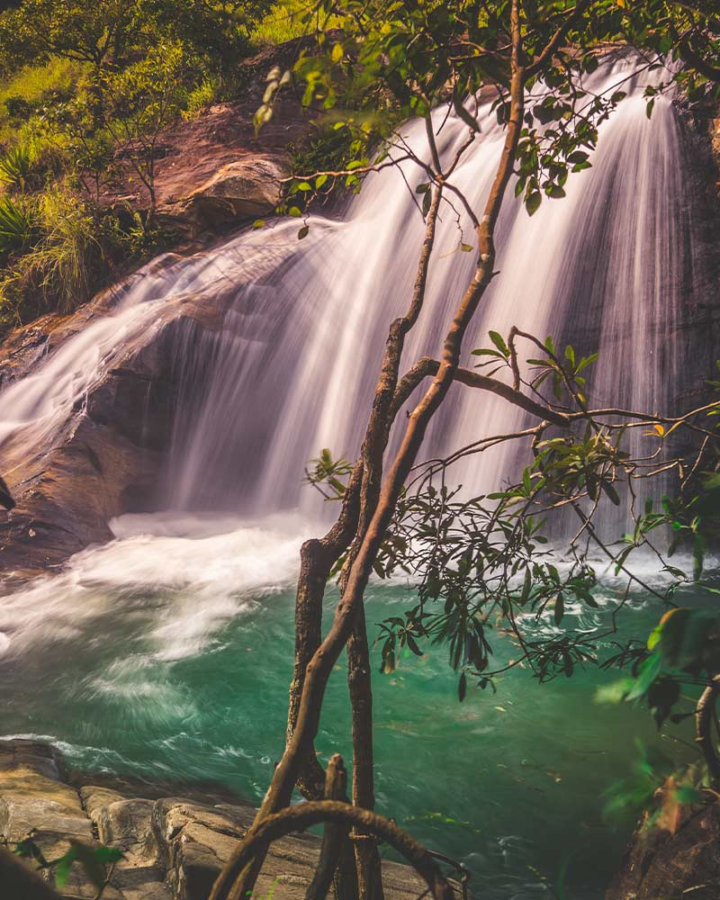
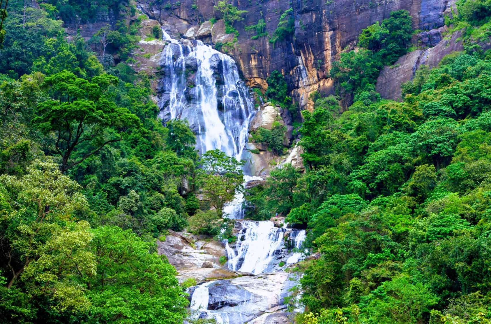
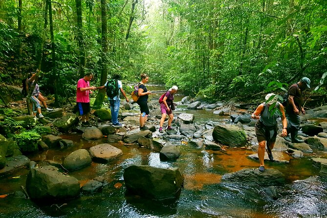

Top Waterfalls & Nature Parks
- Baker's Falls: Scenic waterfall in Horton Plains National Park.
- Diyaluma Falls: The second highest waterfall in Sri Lanka.
- Ravana Falls: Famous waterfall near Ella with a stunning backdrop.
- Knuckles Mountain Range: Rich biodiversity and pristine nature trails.
- Sinharaja Forest Reserve: UNESCO World Heritage rainforest with rare wildlife.



Waterfalls & Nature Parks Comparison
| Place | Main Attraction | Best Time to Visit |
|---|---|---|
| Baker's Falls | Waterfall in Horton Plains | January - March |
| Diyaluma Falls | Second Highest Waterfall | May - September |
| Ravana Falls | Famous Waterfall near Ella | December - April |
| Knuckles Range | Mountain Trails & Wildlife | March - September |
| Sinharaja Forest | Rainforest & Biodiversity | February - April |